All five generators / 五个方案
偏心轮：无动力越过能量上限
正常：偏心轮短暂上坡后回滚；反事实：无动力继续上坡，超过被动能量允许的范围。
eccentric_weighted_wheel_unpowered_overclimb
Draft PR #729 · Full source commit
c6cc3497ec1df8285f6090b25d14ecf2c1d94988
Decoded, mechanics, identity, scale and reproduction checks passed. Browser playback is pending. No Sara submission.
Formal media: native 2048×2048, 24 fps, 120 frames / 5 s. The players below use labelled 1024×1024 H.264 browser derivatives. Binary review masks stay strict white-on-black; native originals are linked separately. The red overlays are visual review aids.
Playback verification
Not yet played in this browser.
Six-gate self-check
| Gate | Status |
|---|
| Native output contract | PASS |
| Violating-object-only mask | PASS |
| Real scaling | PASS |
| Official unpatched runtime | PASS |
| Decoded matched control | PASS |
| Semantic / complete visual outcome | Pending final visual/playback check |
Independent checks and declared model
The scene-specific physical idealizations and the single counterfactual operator are explicit. Blender renders stored states; it is not claimed to solve these motions. The sliding-support generator alone uses native unpatched PyBullet contact integration with passive planar joints.
Every formal mask frame was compared with a separate, reviewer-selected object whitelist projection. Both branches were checked for target clipping over the full clip. All four native streams were independently decoded in full. One seed per generator was reproduced from recorded states, with exact equality of all 120 frame hashes in all four streams.
Scale target: 100,000 accepted profiles; CPU-only audit: 100,000. This is not 100,000 rendered videos. Six axes include four primary physical axes and two shared nuisance axes. Two formal seeds, all 16 physical parameter corners, 100 additional deterministic trajectory samples, and 13 controlled rendered recipes are separate evidence.
Controlled rendered diversity · one axis at a time
768px diagnostic PNGs, not formal 2048 acceptance media. Each pair holds the other five input axes fixed.
length
length low, CF frame 90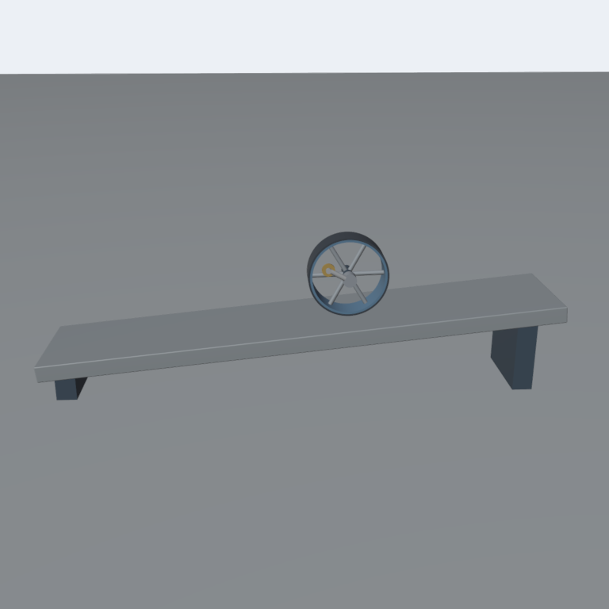
length high, CF frame 90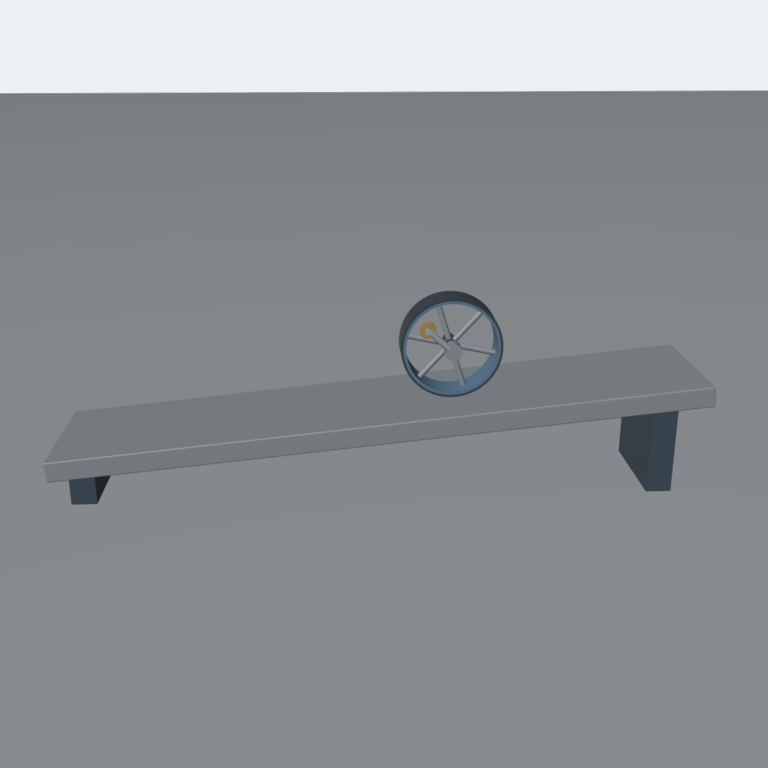
response
response low, CF frame 90response high, CF frame 90
onset
onset low, CF frame 90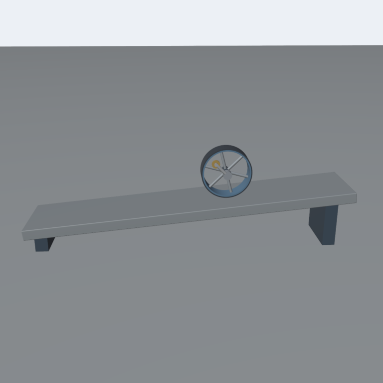
onset high, CF frame 90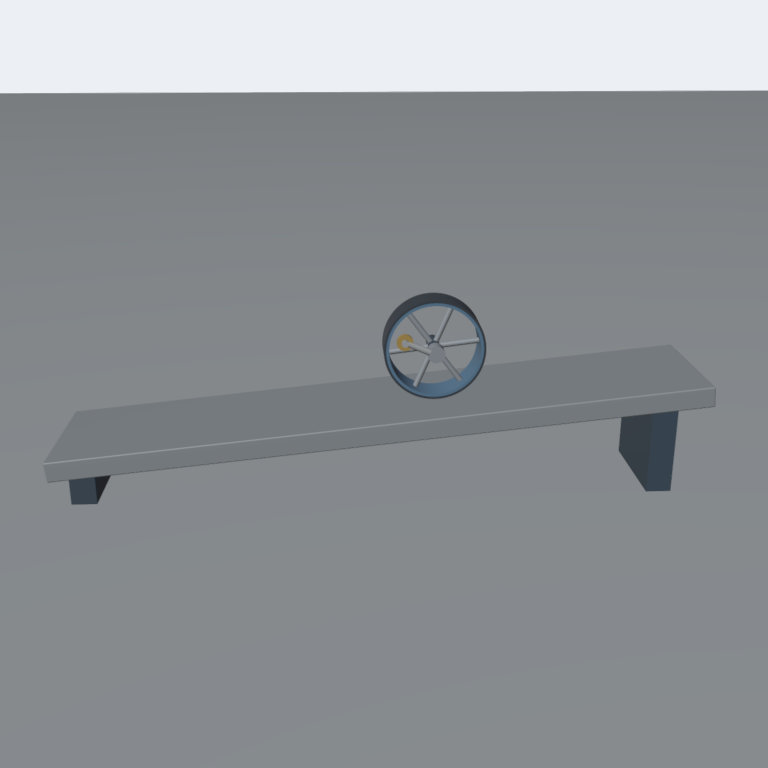
depth
depth low, CF frame 90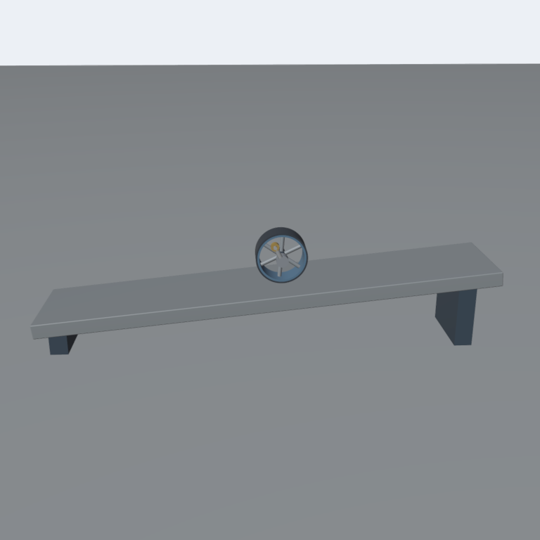
depth high, CF frame 90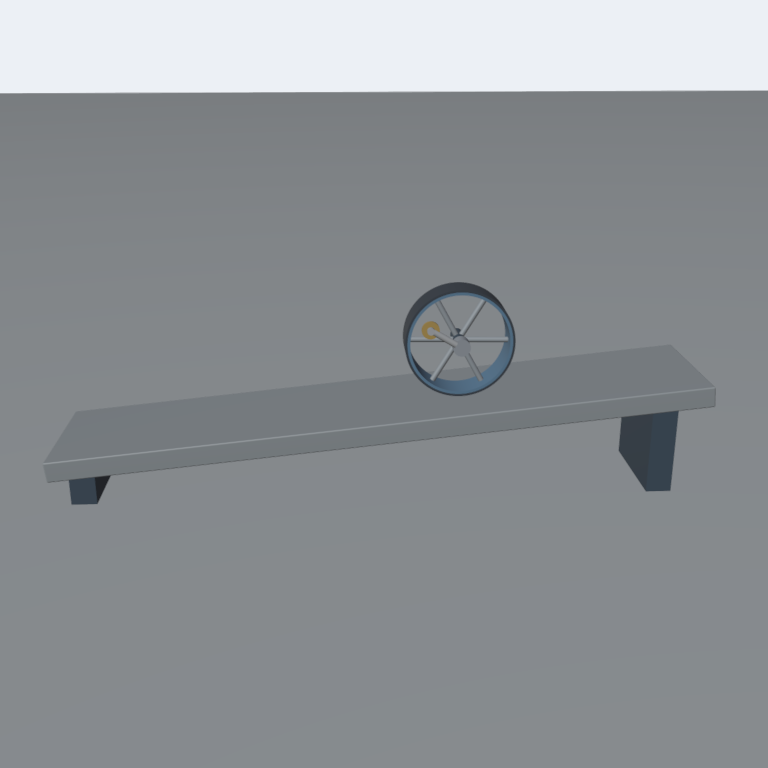
appearance
appearance low, CF frame 90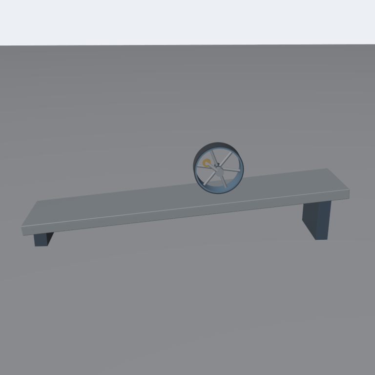
appearance high, CF frame 90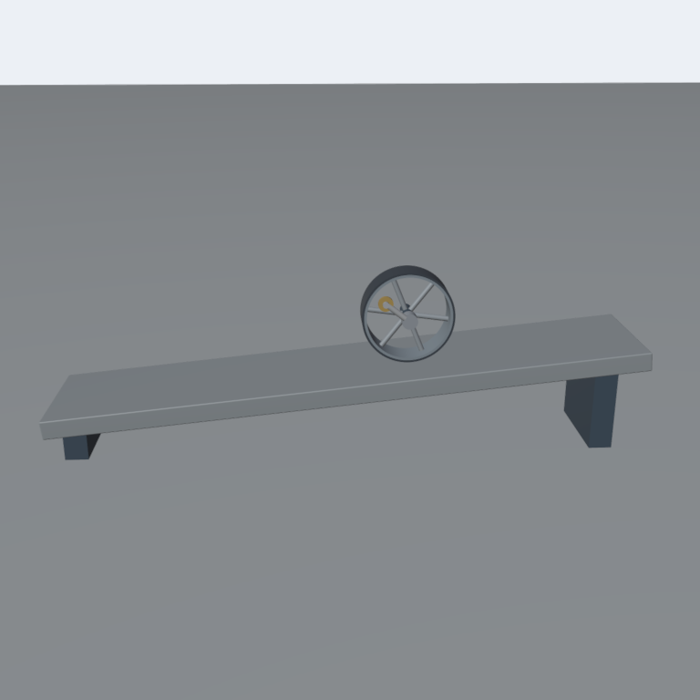
view
view low, CF frame 90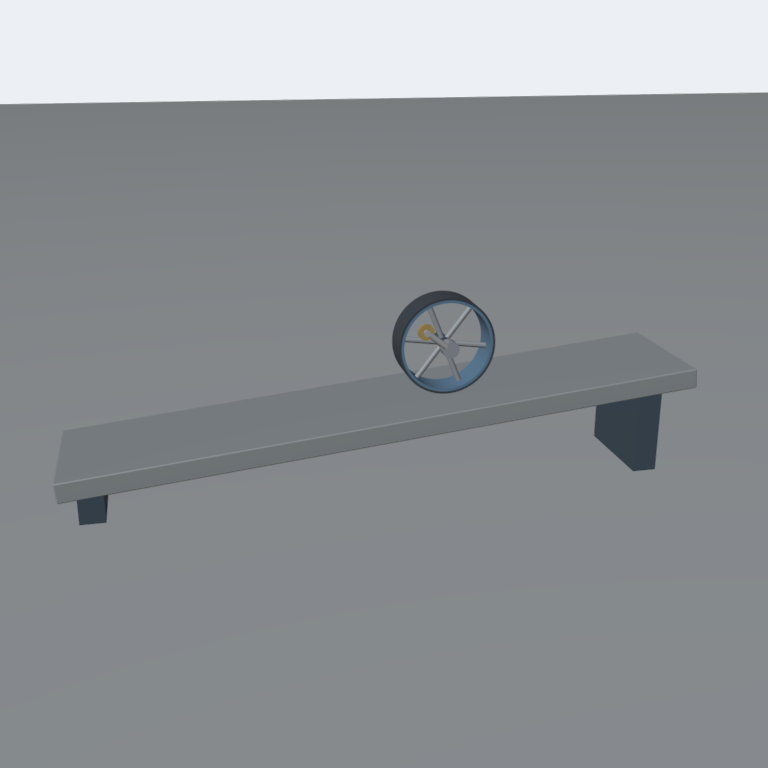
view high, CF frame 90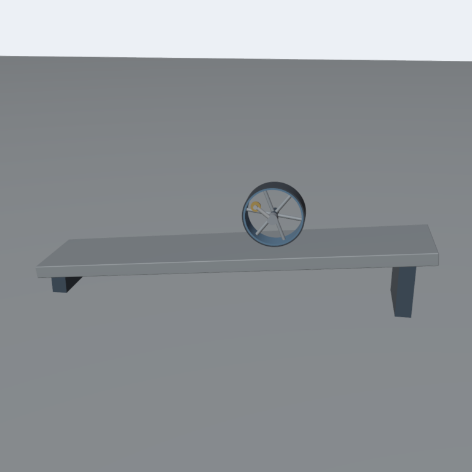
Native edge crops and motion contact sheets
eccentric_weighted_wheel_unpowered_overclimb_00000042-native-edges-079.png
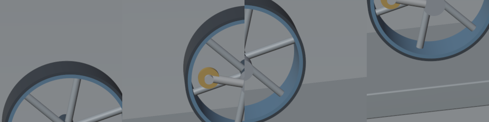
eccentric_weighted_wheel_unpowered_overclimb_00000042-native-edges-080.png
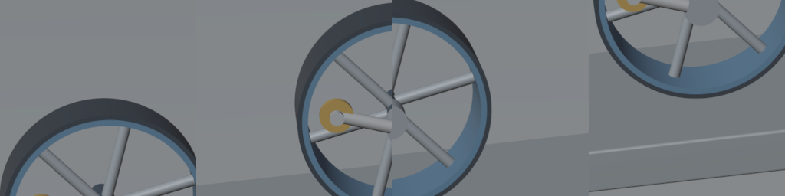
eccentric_weighted_wheel_unpowered_overclimb_00000098-native-edges-072.png
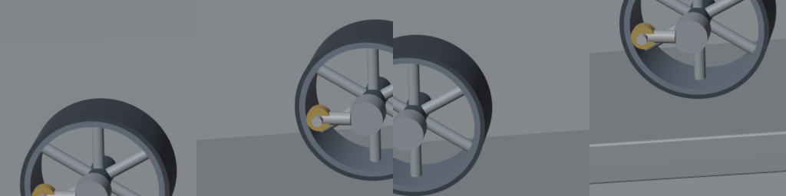
eccentric_weighted_wheel_unpowered_overclimb_00000098-native-edges-073.png
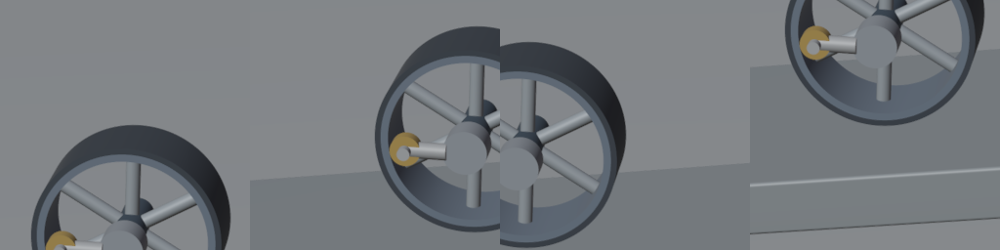
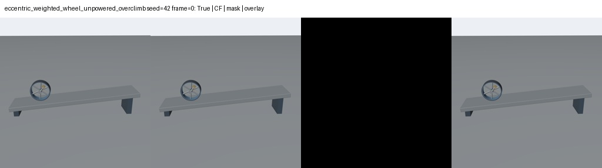
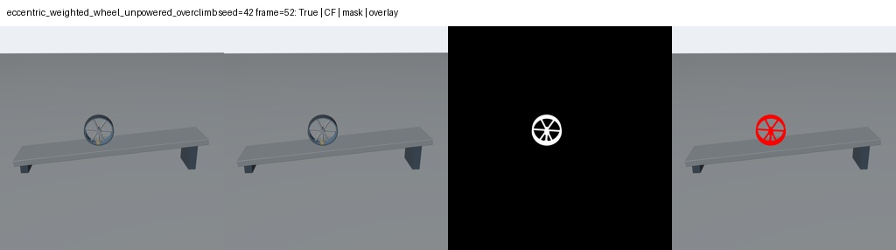
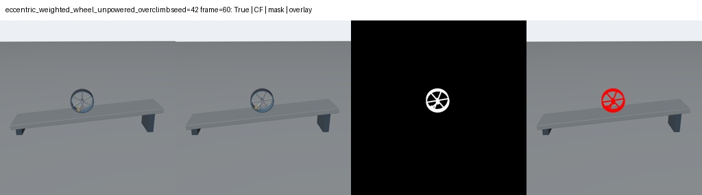
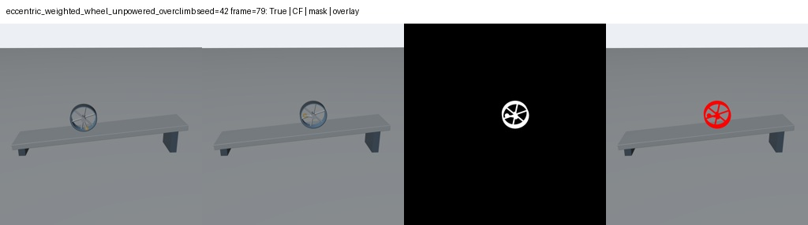
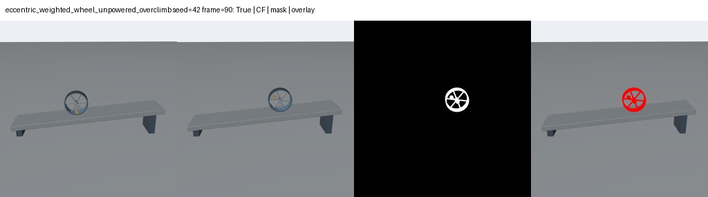
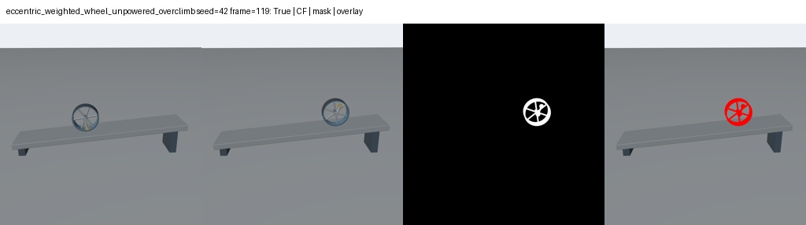
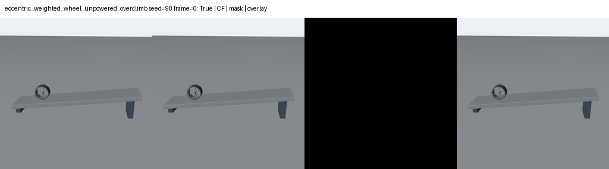
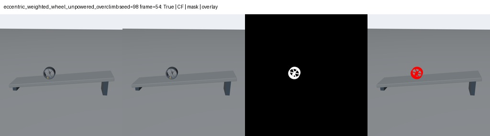
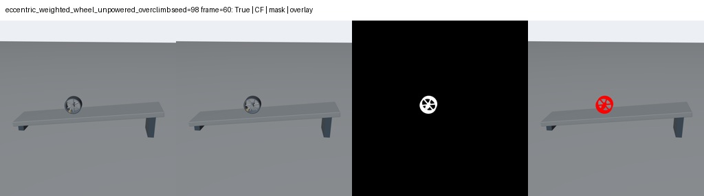
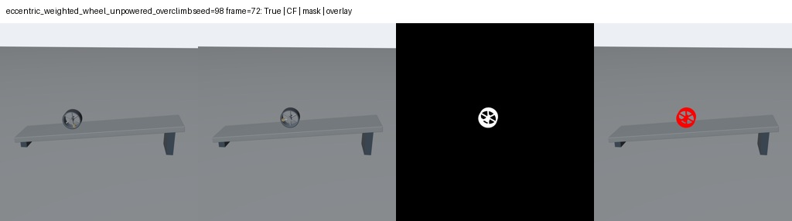
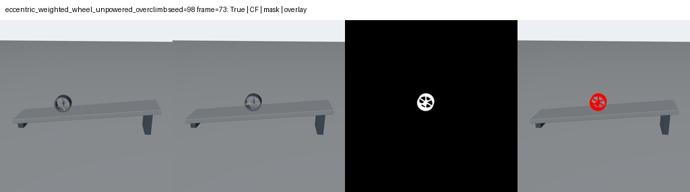
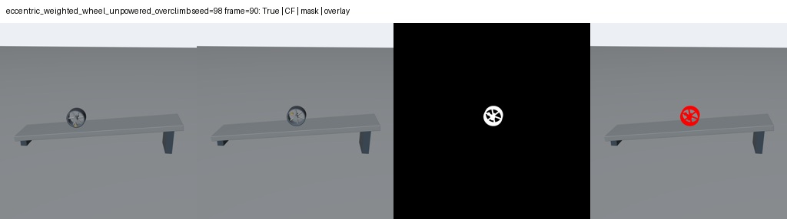
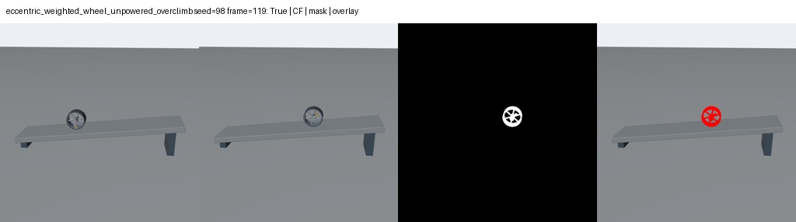